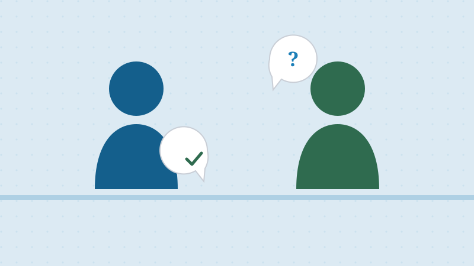

What Actually Happens at the Interview
Updated July 2026 · 5 min read · Ciudadano Ready Team

The naturalization interview is the part most applicants worry about most, largely because it's unfamiliar. Once you know the actual sequence of events, it's much less intimidating. It's a series of steps, most of which you've already prepared for without realizing it.
What to bring
At minimum: your interview notice, your Green Card, a state-issued photo ID, and every passport you've held (valid and expired) covering your time as a permanent resident. If your notice lists additional documents specific to your case, bring those too: originals, not just copies.
Reviewing your N-400 under oath
The officer places you under oath and goes through your N-400 application with you, question by question. This is where your travel history, employment history, tax filings, and any legal history get confirmed or clarified. It's normal for the officer to ask follow-up questions if anything in your file needs more detail; that doesn't mean something is wrong.
The English test
Unless you qualify for an age- or disability-based exemption, you'll be tested on speaking, reading, and writing English. The speaking portion isn't a separate quiz: the officer evaluates it through the natural back-and-forth of reviewing your application. For reading and writing, you'll be asked to read one sentence aloud correctly out of up to three, and write one sentence correctly out of up to three, dictated by the officer.
The civics test
Which version you take depends on when you filed: the 100-question test (10 asked, 6 correct to pass) if you filed before October 20, 2025, or the 128-question test (20 asked, 12 correct to pass) if you filed on or after that date. Our Mock Interview tool walks you through a simulated version of the interview itself, so the actual day won't be the first time you're answering questions on camera.
What happens next
Interviews generally end in one of a few ways: recommended for approval (often the same day), continued for additional evidence or a second interview, or, far less commonly, denied. If you don't pass the English or civics portion on your first attempt, you're not automatically denied; USCIS gives you a second opportunity, typically scheduled 60 to 90 days later, to retake just the portion you missed.
A few practical tips
Arrive early rather than right on time: security screening at USCIS offices can take a while. Answer questions directly and honestly; officers are trained to notice when someone is guessing or reciting rather than genuinely understanding. And remember that feeling nervous is completely normal: it doesn't count against you.
This article is for general information only and is not legal advice. For guidance on your specific case, contact a licensed immigration attorney.